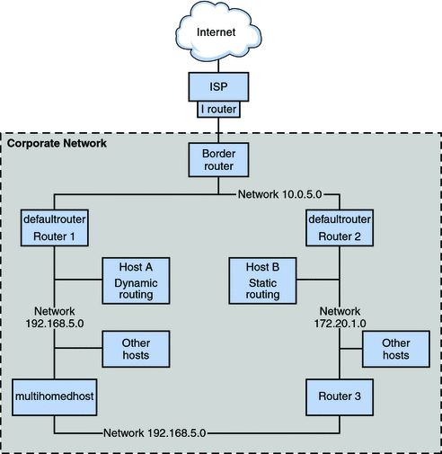

|
|||||||||||||||||||||
|
1. Solaris TCPIP Protocol Suite (Overview) 2. Planning an IPv4 Addressing Scheme (Tasks 3. Planning an IPv6 Addressing Scheme (Overview) 4. Planning an IPv6 Network (Tasks) 5. Configuring TCP/IP Network Services and IPv4 Addressing (Tasks) Before You Configure an IPv4 Network (Task Map) Determining Host Configuration Modes Adding a Subnet to a Network (Task Map) Network Configuration Task Map Configuring Systems on the Local Network How to Configure a Host for Local Files Mode How to Set Up a Network Configuration Server How to Configure Hosts for Network Client Mode How to Change the IPv4 Address and Other Network Configuration Parameters Monitoring and Modifying Transport Layer Services How to Log the IP Addresses of All Incoming TCP Connections How to Add Services That Use the SCTP Protocol How to Use TCP Wrappers to Control Access to TCP Services 6. Administering Network Interfaces (Tasks) 7. Enabling IPv6 on a Network (Tasks) 8. Administering a TCP/IP Network (Tasks) 9. Troubleshooting Network Problems (Tasks) 10. TCP/IP and IPv4 in Depth (Reference) 12. About Solaris DHCP (Overview) 13. Planning for DHCP Service (Tasks) 14. Configuring the DHCP Service (Tasks) 15. Administering DHCP (Tasks) 16. Configuring and Administering DHCP Clients 17. Troubleshooting DHCP (Reference) 18. DHCP Commands and Files (Reference) 19. IP Security Architecture (Overview) 21. IP Security Architecture (Reference) 22. Internet Key Exchange (Overview) 24. Internet Key Exchange (Reference) 25. Solaris IP Filter (Overview) 28. Administering Mobile IP (Tasks) 29. Mobile IP Files and Commands (Reference) 30. Introducing IPMP (Overview) 31. Administering IPMP (Tasks) Part VI IP Quality of Service (IPQoS) 32. Introducing IPQoS (Overview) 33. Planning for an IPQoS-Enabled Network (Tasks) 34. Creating the IPQoS Configuration File (Tasks) 35. Starting and Maintaining IPQoS (Tasks) 36. Using Flow Accounting and Statistics Gathering (Tasks) |
Packet Forwarding and Routing on IPv4 NetworksThis section contains procedures and examples that show how to configure forwarding and routing for routers and hosts on IPv4 networks. Packet forwarding is the basic method for sharing information across systems on a network. Packets are transferred between a source interface and a destination interface, usually on two different systems. When you issue a command or send a message to a nonlocal interface, your system forwards those packets onto the local network. The interface with the destination IP address that is specified in the packet headers then retrieves the packets from the local network. If the destination address is not on the local network, the packets are then forwarded to the next adjacent network, or hop. By default, packet forwarding is automatically configured when you install the Solaris OS. Routing is the process by which systems decide where to send a packet. Routing protocols on a system “discover” the other systems on the local network. When the source system and the destination system are on the same local network, the path that packets travel between them is called a direct route. If a packet must travel at least one hop beyond its source system, the path between the source system and destination system is called an indirect route. The routing protocols learn the path to a destination interface and retain data about known routes in the system's routing table. Routers are specially configured systems with multiple physical interfaces that connect the router to more than one local network. Therefore, the router can forward packets beyond the home LAN, regardless of whether the router runs a routing protocol. For more information about how routers forward packets, refer to Planning for Routers on Your Network. Routing protocols handle routing activity on a system and, by exchanging routing information with other hosts, maintain known routes to remote networks. Both routers and hosts can run routing protocols. The routing protocols on the host communicate with routing daemons on other routers and hosts. These protocols assist the host in determining where to forward packets. When network interfaces are enabled, the system automatically communicates with the routing daemons. These daemons monitor routers on the network and advertise the routers' addresses to the hosts on the local network. Some routing protocols, though not all, also maintain statistics that you can use to measure routing performance. Unlike packet forwarding, you must explicitly configure routing on a Solaris system. This section contains tasks for administering packet forwarding and routing on IPv4 routers and hosts. For information about routing on an IPv6-enabled network, refer to Configuring an IPv6 Router. Routing Protocols Supported by the Solaris OSRouting protocols are classified as interior gateway protocols (IGPs), exterior gateway protocols (EGPs), or a combination of both. Interior gateway protocols exchange routing information between routers on networks under common administrative control. In the network topology shown in Figure 5-2, the routers run an IGP for exchanging routing information. Exterior gateway protocols enable the router that connects the local internetwork to an external network to exchange information with another router on the external network. For example, the router that connects a corporate network to an ISP runs an EGP to exchange routing information with its router counterpart at the ISP. Border Gateway Protocol (BGP) is a popular EGP that is used for carrying routing information between different organizations and IGPs. The following table provides information about the Solaris routing protocols and the location of each protocol's associated documentation. Table 5-1 Solaris Routing Protocols
IPv4 Autonomous System TopologySites with multiple routers and networks typically administer their network topology as a single routing domain, or autonomous system (AS) . The following figure shows a typical network topology that would be considered a small AS. This topology is referenced in the examples throughout this section. Figure 5-2 Autonomous System With Multiple IPv4 RoutersThe figure shows an AS that is divided into three local networks, 10.0.5.0, 172.20.1.0, and 192.168.5. Four routers share packet-forwarding and routing responsibilities. The AS includes the following types of systems:
Configuring an IPv4 RouterThis section contains a procedure and example for configuring an IPv4 router. To configure an IPv6-enabled router, refer to How to Configure an IPv6-Enabled Router. Because a router provides the interface between two or more networks, you must assign a unique name and IP address to each of the router's physical network interfaces. Thus, each router has a host name and an IP address that are associated with its primary network interface, in addition to a minimum of one more unique name and IP address for each additional network interface. You can also use the following procedure to configure a system with only one physical interface (by default, a host) to be a router. You might configure a single interface system as a router if the system serves as one endpoint on a PPP link, as explained in Planning a Dial-up PPP Link in System Administration Guide: Network Services. Note - You can configure all interfaces of a router during Solaris system installation. For instructions, see Solaris Express Installation Guide: Basic Installations. How to Configure an IPv4 RouterThe following instructions assume that you are configuring interfaces for the router after installation. Before You BeginAfter the router is physically installed on the network, configure the router to operate in local files mode, as described in How to Configure a Host for Local Files Mode. This configuration ensures that routers boot if the network configuration server is down.
This example shows how to upgrade a system with more than one interface to become a default router. The goal is to make Router 2, which is shown in Figure 5-2, the default router for network 172.20.1.0. Router 2 contains two wired network connections, one connection to network 172.20.1.0 and one to network 10.0.5.0. The example assumes that the router operates in local files mode, as described in How to Configure a Host for Local Files Mode. After becoming superuser or assuming an equivalent role, you would determine out the status of the system's interfaces. # dladm show-link
ce0 type: legacy mtu: 1500 device: ce0
bge0 type: non-vlan mtu: 1500 device: bge0
bge1 type: non-vlan mtu: 1500 device: bge1
# ifconfig -a
lo0: flags=1000849 <UP,LOOPBACK,RUNNING,MULTICAST,IPv4> mtu 8232 index 1
inet 127.0.0.1 netmask ff000000
ce0: flags=1000843 <UP,BROADCAST,RUNNING,MULTICAST,IPv4> mtu 1500 index 2
inet 172.20.1.10 netmask ffff0000 broadcast 172.20.10.100
ether 8:0:20:c1:1b:c6 The output of dladm show-link indicates that three links are available on the system. Only the ce0 interface has been plumbed. You would begin default router configuration by physically connecting the bge0 interface to the 10.0.5.0 network. Then, you would plumb the interface and make it persist across reboots. # ifconfig bge0 plumb up
# ifconfig bge0 10.0.5.10
# ifconfig -a
lo0: flags=1000849 <UP,LOOPBACK,RUNNING,MULTICAST,IPv4> mtu 8232 index 1
inet 127.0.0.1 netmask ff000000
ce0: flags=1000843 <UP,BROADCAST,RUNNING,MULTICAST,IPv4> mtu 1500 index 2
inet 172.20.1.10 netmask ffff0000 broadcast 172.255.255.255
ether 8:0:20:c1:1b:c6
bge0: flags=1000843 <UP,BROADCAST,RUNNING,MULTICAST,IPv4> mtu 1500 index 2
inet 10.0.5.10 netmask ff000000 broadcast 10.255.255.255
ether 8:0:20:e5:95:c4
# vi /etc/hostname.bge0
10.0.5.10 255.0.0.0Reboot the system, using the reconfiguration boot command: # reboot -- -r Continue by configuring the following network databases with information about the newly plumbed interface and the network to which it is connected: # vi /etc/inet/hosts 127.0.0.1 localhost 172.20.1.10 router2 #interface for network 172.20.1 10.0.5.10 router2-out #interface for network 10.0.5 # vi /etc/inet/netmasks 172.20.1.0 255.255.0.0 10.0.5.0 255.0.0.0 Finally, use SMF to enable packet forwarding and then enable the in.routed routing daemon. # svcadm enable ipv4-forwarding # svcadm enable route:default Now IPv4 packet forwarding and dynamic routing through RIP are enabled on Router 2. However, the default router configuration for network 172.20.1.0 is not yet complete. You would need to do the following:
Routing Tables and Routing TypesBoth routers and hosts maintain a routing table. The routing daemon on each system updates the table with all known routes. The system's kernel reads the routing table before forwarding packets to the local network. The routing table lists the IP addresses of networks that the system knows about, including the system's local, default network. The table also lists the IP address of a gateway system for each known network. The gateway is a system that can receive outgoing packets and forward them one hop beyond the local network. The following is a simple routing table for a system on an IPv4-only network: Routing Table: IPv4 Destination Gateway Flags Ref Use Interface -------------------- -------------------- ----- ----- ------ --------- default 172.20.1.10 UG 1 532 ce0 224.0.0.0 10.0.5.100 U 1 0 bge0 10.0.0.0 10.0.5.100 U 1 0 bge0 127.0.0.1 127.0.0.1 UH 1 57 lo0 You can configure two types of routing on a Solaris system: static and dynamic. You can configure either or both routing types on a single system. A system that implements dynamic routing relies on routing protocols, such as RIP for IPv4 networks, and RIPng for IPv6 networks, to maintain its routing tables. A system that runs only static routing does not rely on a routing protocol for routing information and for updating the routing table. Instead, you must maintain the system's known routes manually through the route command. For complete details, refer to the route(1M) man page. When you configure routing for the local network or autonomous system, consider which type of routing to support on particular routers and hosts. The AS that is shown is Figure 5-2 combines both static and dynamic routing. Configuring RoutesTo implement dynamic routing for an IPv4 network, use the routeadm or svcadm command to start the in.routed routing daemon. For instructions, see How to Configure an IPv4 Router. Dynamic routing is the preferred strategy for most networks and autonomous systems. However, your network topology or a particular system on your network might require static routing. In that case, you must manually edit the system routing table to reflect the known route to the gateway. The next procedure shows how to add a static route. Note - Two routes to the same destination does not automatically cause the system to do load balancing or failover. If you need these capabilities, use IPMP, as explained in Chapter 30, Introducing IPMP (Overview). How to Add a Static Route to the Routing Table
The following example shows how to add a static route to a system. The system is Router 2, the default router for the 172.20.1.0 network that is shown in Figure 5-2. In Example 5-4, Router 2 is configured for dynamic routing. To better serve as the default router for the hosts on network 172.20.1.0, Router 2 additionally needs a static route to the AS's border router, 10.0.5.150. To view the routing table on Router 2, you would do the following: # netstat -rn Routing Table: IPv4 Destination Gateway Flags Ref Use Interface -------------------- -------------------- ----- ----- ------ --------- default 172.20.1.10 UG 1 249 ce0 224.0.0.0 172.20.1.10 U 1 0 ce0 10.0.5.0 10.0.5.20 U 1 78 bge0 127.0.0.1 127.0.0.1 UH 1 57 lo0 The routing table indicates two routes that Router 2 knows about. The default route uses Router 2's 172.20.1.10 interface as its gateway. The second route, 10.0.5.0, was discovered by the in.routed daemon running on Router 2. The gateway for this route is Router 1, with the IP address 10.0.5.20. To add a second route to network 10.0.5.0, which has its gateway as the border router, you would do the following: # route -p add -net 10.0.5.0/24 -gateway 10.0.5.150/24 add net 10.0.5.0: gateway 10.0.5.150 Now the routing table has a route for the border router, which has the IP address 10.0.5.150/24. # netstat -rn Routing Table: IPv4 Destination Gateway Flags Ref Use Interface -------------------- -------------------- ----- ----- ------ --------- default 172.20.1.10 UG 1 249 ce0 224.0.0.0 172.20.1.10 U 1 0 ce0 10.0.5.0 10.0.5.20 U 1 78 bge0 10.0.5.0 10.0.5.150 U 1 375 bge0 127.0.0.1 127.0.0.1 UH 1 57 lo0 Configuring Multihomed HostsIn the Solaris OS, a system with more than one interface is considered a multihomed host. A multihomed host does not forward IP packets. However, you can configure a multihomed host to run routing protocols. You typically configure the following types of systems as multihomed hosts:
How to Create a Multihomed Host
The following example shows how to configure the multihomed host that is shown in Figure 5-2. In the example, the system has the host name hostc. This host has two interfaces, which are both connected to network 192.168.5.0 . To begin, you would display the status of the system's interfaces. # dladm show-link
hme0 type: legacy mtu: 1500 device: hme0
qfe0 type: legacy mtu: 1500 device: qfe0
qfe1 type: legacy mtu: 1500 device: qfe1
qfe2 type: legacy mtu: 1500 device: qfe2
qfe3 type: legacy mtu: 1500 device: qfe3
# ifconfig -a
# ifconfig -a
lo0: flags=1000849 <UP,LOOPBACK,RUNNING,MULTICAST,IPv4> mtu 8232 index 1
inet 127.0.0.1 netmask ff000000
hme0: flags=1000843 <UP,BROADCAST,RUNNING,MULTICAST,IPv4> mtu 1500 index 2
inet 192.168.5.82 netmask ff000000 broadcast 192.255.255.255
ether 8:0:20:c1:1b:c6
The dladm show-link command reports that hostc has two interfaces with a total of five possible links. However, only hme0 has been plumbed. To configure hostc as a multihomed host, you must add qfe0 or another link on the qfe NIC . First, you would physically connect the qfe0 interface to the 192.168.5.0 network. Then you would plumb the qfe0 interface, and make the interface persist across reboots. # ifconfig qf0 plumb up
# ifconfig qfe0 192.168.5.85
# ifconfig -a
lo0: flags=1000849 <UP,LOOPBACK,RUNNING,MULTICAST,IPv4> mtu 8232 index 1
inet 127.0.0.1 netmask ff000000
hme0: flags=1000843 <UP,BROADCAST,RUNNING,MULTICAST,IPv4> mtu 1500 index 2
inet 192.168.5.82 netmask ff0000 broadcast 192.255.255.255
ether 8:0:20:c1:1b:c6
qfe0: flags=1000843 <UP,BROADCAST,RUNNING,MULTICAST,IPv4> mtu 1500 index 2
inet 192.168.5.85 netmask ff000000 broadcast 192.255.255.255
ether 8:0:20:e1:3b:c4
# vi /etc/hostname.qfe0
192.168.5.85 255.0.0.0Reboot the system, using the reconfiguration command: # reboot -- -r Next, you would add the qfe0 interface to the hosts database: # vi /etc/inet/hosts 127.0.0.1 localhost 192.168.5.82 host3 #primary network interface for host3 192.168.5.85 host3-2 #second interface Then, you would check the state of packet forwarding and routing on host3: # routeadm
Configuration Current Current
Option Configuration System State
---------------------------------------------------------------
IPv4 routing enabled enabled
IPv6 routing disabled disabled
IPv4 forwarding enabled enabled
IPv6 forwarding disabled disabled
Routing services "route:default ripng:default"The routeadm command reports that dynamic routing through the in.routed daemon and packet forwarding are currently enabled. However, you would need to disable packet forwarding: # svcadm disable ipv4-forwarding You can also use the routeadm commands as shown in How to Create a Multihomed Host to turn off packet forwarding. When packet forwarding is disabled, host3 becomes a multihomed host. Configuring Routing for Single-Interface SystemsSingle-interface hostsneed to implement some form of routing. If the host is to obtain its routes from one or more local default routers, then you must configure the host to use static routing. Otherwise, dynamic routing is recommended for the host. The following procedures contain the instructions for enabling both routing types. How to Enable Static Routing on a Single-Interface HostThis procedure enables static routing on a single-interface host. Hosts that use static routing do not run a dynamic routing protocolsuch as RIP. Instead, the host must rely on the services of a default router for routing information. The figure IPv4 Autonomous System Topology shows several default routers and their client hosts. If you supplied the name of a default router when you installed a particular host, that host is already configured to use static routing. Note - You can also use the following procedure to configure static routing on a multihomed host. For information about the /etc/defaultrouter file, see /etc/defaultrouter File. For information about static routing and the routing table, refer to Routing Tables and Routing Types.
The following example shows how to configure static routing for hostb, a single-interface host on the network 172.20.1.0 that is shown in Figure 5-2. hostb needs to use Router 2 as its default router. First, you would log in to hostb as superuser, or assume an equivalent role. Then, you would determine whether the /etc/defaultrouter file is present on the host: # cd /etc # ls | grep defaultrouter No response from grep indicates that you need to create the /etc/defaultrouter file. # vi /etc/defaultrouter 172.20.1.10 The entry in the /etc/defaultrouter file is the IP address of the interface on Router 2, which is attached to the 172.20.1.0 network. Next, you verify whether the host currently enables packet forwarding or routing. # routeadm
Configuration Current Current
Option Configuration System State
---------------------------------------------------------------
IPv4 routing disabled disabled
IPv6 routing disabled disabled
IPv4 forwarding enabled enabled
IPv6 forwarding disabled disabled
Routing services "route:default ripng:default"Packet forwarding is enabled for this particular host. You would turn it off as follows: # svcadm disable ipv4-forwarding Lastly, you would make sure that the host's /etc/inet/hosts file has an entry for the new default router. # vi /etc/inet/hosts 127.0.0.1 localhost 172.20.1.18 host2 #primary network interface for host2 172.20.1.10 router2 #default router for host2 How to Enable Dynamic Routing on a Single-Interface HostDynamic routing is the easiest way to manage routing on a host. Hosts that use dynamic routing run the routing protocols provided by the in.routed daemon for IPv4 or in.ripngd daemon for IPv6. Use the next procedure to enable IPv4 dynamic routing on a single interface host. For more information about dynamic routing, refer to Packet Forwarding and Routing on IPv4 Networks.
The following example shows how to configure dynamic routing for hosta, a single-interface host on the network 192.168.5.0 that is shown in Figure 5-2. hosta currently uses Router 1 as its default router. However, hosta now needs to run dynamic routing. First, you would log in to hosta as superuser or assume an equivalent role. Then, you would determine whether the /etc/defaultrouter file is present on the host: # cd /etc # ls | grep defaultrouter defaultrouter The response from grep indicates that a /etc/defaultrouter file exists for hosta. # vi /etc/defaultrouter 192.168.5.10 The file has the entry 192.168.5.10, which is the IP address for Router 1. You would delete this entry to enable static routing. Next, you would need to verify whether packet forwarding and routing are already enabled for the host. # routeadm Configuration Current Current
Option Configuration System State
---------------------------------------------------------------
IPv4 routing disabled disabled
IPv6 routing disabled disabled
IPv4 forwarding disabled disabled
IPv6 forwarding disabled disabled
Routing services "route:default ripng:default"Both routing and packet forwarding are turned off for hosta. Turn on routing to complete the configuration of dynamic routing for hosta, as follows: #svcadm enable route:default |
||||||||||||||||||||
|